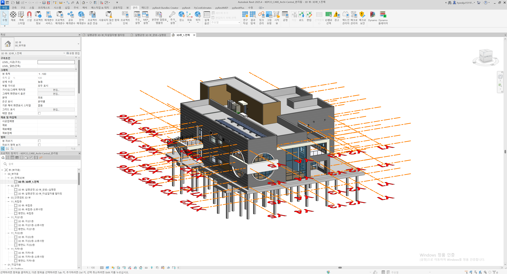
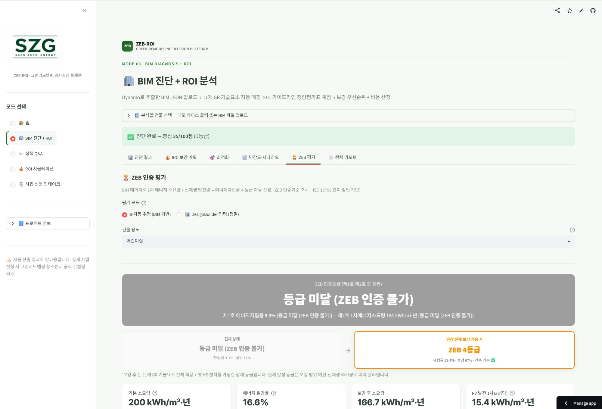
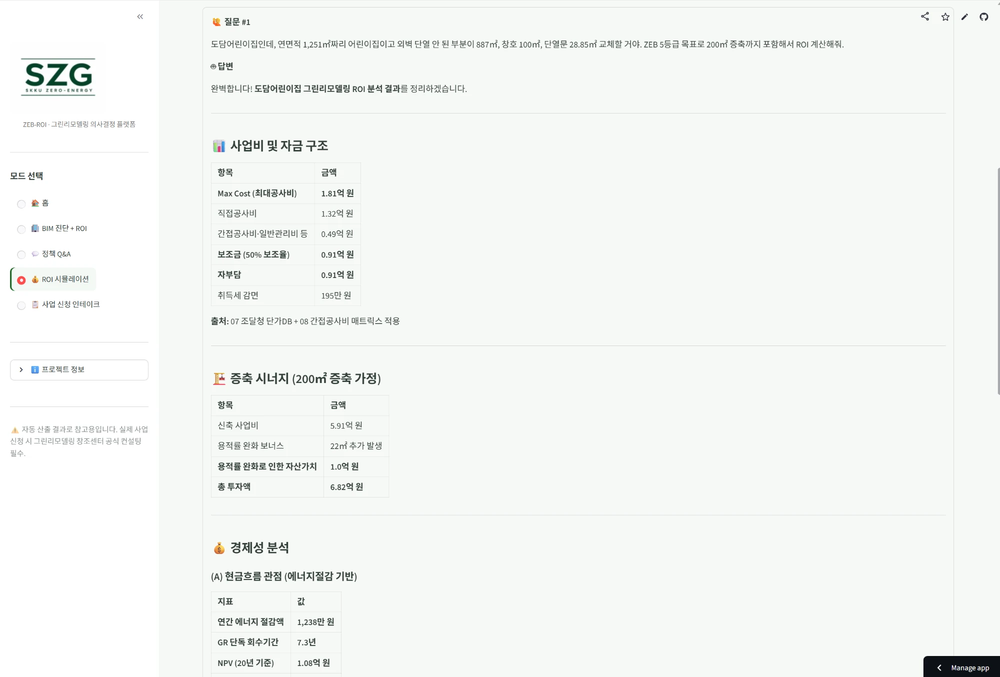
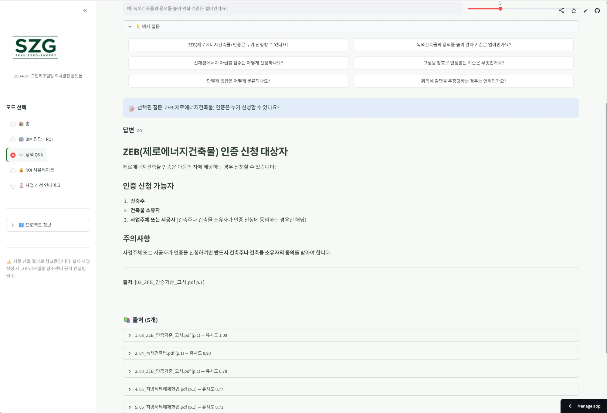
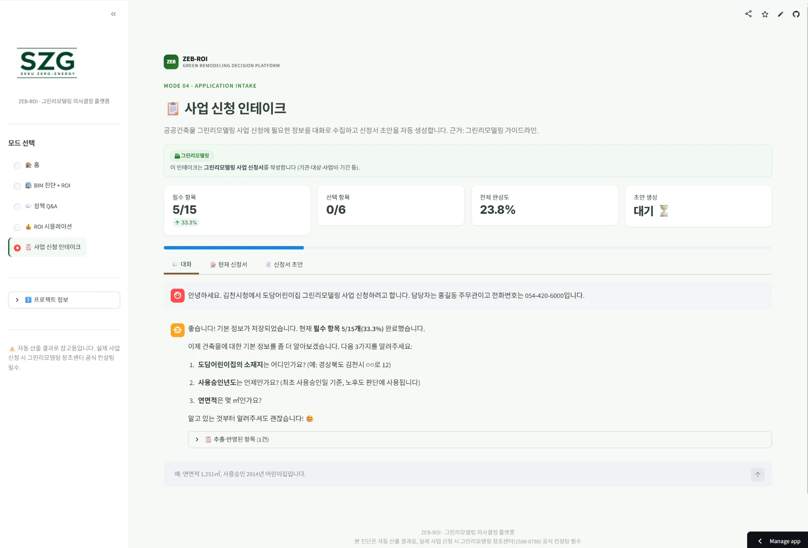

ZEB 의무화와 공공건축 BIM 의무화
ZEB 의사결정과 현행 제도의 한계
BIM 기반 통합 의사결정 플랫폼 — 6개 모드
공공기관 소유 어린이집 검증
기대효과와 앞으로의 AI 발전방향
조달청·공공 발주 사업에서 BIM(건물정보모델) 적용이 단계적으로 의무화되며, 설계 단계의 건물 정보가 디지털 객체로 축적되고 있다.

쌓인 BIM 데이터는 대부분 설계·시공 관리에만 쓰이고, 에너지·경제성 의사결정으로는 거의 활용되지 못한다.
ZEB는 결과(등급)를 요구하고, BIM은 데이터(입력)를 제공한다 — 그 사이를 잇는 통합 판단 도구가 없다.
11개 기술요소
진단표 수기 작성
에너지 성능 ·
자립률 계산
보조금 · 취득세 ·
용적률 검토
항목별 견적
(수일~수주)
"그린리모델링은 회수기간이 30~50년"이라는 통념이 ZEB 사업 판단을 가로막는다.
그린리모델링·ZEB 인증 신청이 복잡한 서식 중심이라 진입장벽이 높다
보조금·취득세·용적률 완화 근거가 여러 법·고시에 분산돼 파악이 어렵다
비용·보조금·ZEB 등급을 한 번에 산정할 표준 도구가 제도적으로 없다
ZEB 사업의 진입장벽이 높아지고, 등급·비용·회수를 통합 판단할 객관적 근거가 부족하다.
BIM 단일 입력으로 진단부터 경제성까지 하나의 흐름으로 이어 붙인다.
자연어·BIM에서 입력 조건을 자동 추출해 수일 걸리던 산정을 즉시 처리한다.
단가DB·법령 원문을 인용해 결과의 신뢰성과 사업 근거를 확보한다.
분야별로 흩어진 ZEB 의사결정을, BIM 한 번으로 통합·자동화·근거기반화한다.
계산·판정은 결정론적 엔진이, 언어(입력 해석·결과 설명)만 LLM이 맡는다 — 모든 수치는 공개 데이터·법령에 근거하므로 환각 없는 의사결정이 가능하다.
BIM 업로드 → 11개 기술요소 진단 → ZEB 인증 등급 자동 산정
자연어 조건 → 공사비·보조금·회수기간 즉시 계산
11개 법령·고시·공고 원문에서 근거 조항을 인용해 답변
대화로 정보를 모아 사업 신청서 초안을 자동 생성




합계 25점 · D등급 — ZEB 인증 미달 (1차E 소요량 166.7)
| 기술요소 | Max Cost | 점수상승 |
|---|---|---|
| 고효율 EHP 23대 교체 | 0.97억 | +10 |
| 태양광 +13.8kW (자립률 20% 도달) | 0.29억 | +3 |
| 폐열회수환기 ERV 5대 | 0.35억 | +2 |
| 고효율 LED 439개 | 0.31억 | +2 |
| BEMS · 원격검침 1식 | 0.42억 | +2 |
| 외피 단열 (창호·외벽·지붕·문) | ROI서 정밀산정 | +26 |
11개 요소 전체 보강 시 25점 → 75점(A등급), ZEB 인증은 미달 → ZEB 4등급(1차E 소요량 166.7 → 66.0, 제2호 기준 90 미만)으로 도약한다. 대상 건물은 태양광이 없어 자립률은 0%다.
근거기반(RAG)으로 환각 방지 · 데이터 표준화(IFC) · AI 산정 결과의 책임소재 정립